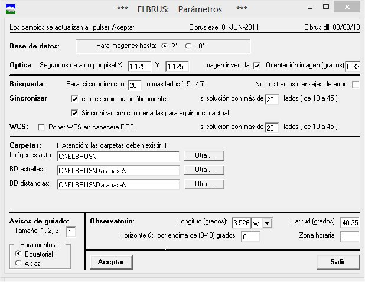
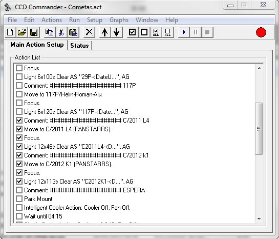
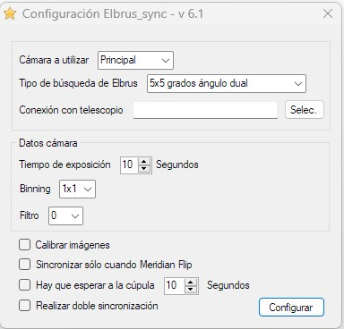
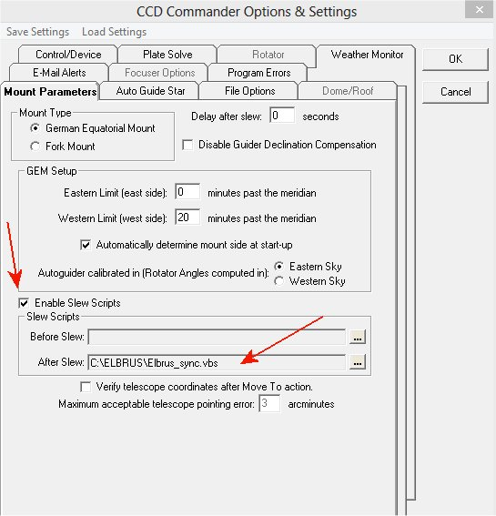

|
Integración CCD Commander y Elbrus |
||
|
|
Versión 6.0 |
|
Cuando comencé a automatizar el observatorio basándome en el CCD Commander me encontré con un problema inesperado a la hora de resolver astrométricamente las tomas para sincronizar el telecopio.
CCD Commander utiliza bien la versión LE de Pinpoint que incorpora Maxim DL o directamente la versión completa. En ambos casos Pinpoint tiene una mala costumbre: intenta resolver la foto de cualquier manera, aunque para ello tenga que modificar constantes como son la resolución por pixel o la longitud focal. Nunca he entendido por qué este empeño en resolver y no contestar "no puedo". Este defecto, que no efecto, se da con mayor asiduidad cuanto más pequeño sea el CCD que utilicemos.
La consecuencia de esto es que te puedes encontrar al telescopio intentando apuntar a una zona comprometida que puede llegar a estropear los motores, cámara o cualquier instrumento. Aunque él crea que apunta al cenit, porque Pinpoint así se lo ha dicho.
Era evidente que tenía que buscar una alternativa a la acción Plate Solve de CCD Commander, que nunca más utilizaré mientras Pinpoint funcione como hasta ahora.
Había hecho algunas pruebas con un programa desarrollado por Alfonso Pulido que se denomina Elbrus, que debo decir que es una auténtica maravilla, pues en más de una ocasión me había ayudado a "encontrarme" cuando estaba perdido en la inmensidad del universo.
Tras estudiar la documentación disponible, especialmente la utilización del programa desde el modo comando, opté por intentar hacer que CCD Commander fuese capaz de utilizar Elbrus, pues tiene la decencia de que cuando no sabe resolver una foto lo dice y te deja el telescopio donde estaba. ¡Mejor perdido que mal hallado!
A la hora de utilizar Elbrus es importante tener en cuanta ciertos aspectos de la configuración. Recomiendo que primero hagáis funcionar Elbrus y luego prosigáis con lo que aquí propongo. A modo de ejemplo, estos son los parámetros que utilizo yo, aunque cada instalación tendrá los suyos dependiendo de la óptica empleada:

Con todo esto elaboré una solución que ha funcionado y que muchos llevan utilizado durante mucho tiempo. Pero tras una sugerencia de Ramón Naves sobre la posibilidad de emplear los scripts que CCD Commander permite definir para antes y después de los slew, me puse a darle vueltas al tema y lo que comenzó con la idea de ser un simple script, se fue complicando con llamadas a objetos exportados por MaximDL y monturas con interfaz ASCOM.
MaximDL proporciona el interfaz de la cámara que necesitamos para realizar la foto que deberá resolver Elbrus. Para acceder a la montura podremos seleccionar de entre todas las alternativas ASCOM que tengamos instaladas.
Como puede ver, no existen llamadas explícitas a Elbrus desde los ACT (fichero de lista de acciones) de CCD Commander, sino que el proceso de sincronización se produce de manera automática cada vez que CCD Commander ordena un slew.
Y lo que es mejor, se ha logrado resolver el problema del Meridian Flip, pues con el primer diseño no tenía forma de sincronizar tras un cambio de meridiano, lo que era un gran inconveniente.
Debemos ser conscientes que cada slew implica, como mínimo: hacer el slew, realizar una foto, llamar a Elbrus para que resuelva, sincronizar el telescopio y realizar un re-slew. Pero todo de manera automática y transparente. Un ejemplo de cómo queda un ACT de CCD Commander es:

Las primeras versiones se basaron en un simple script escrito en VBS y que el usuario debía modificar para adaptar a sus necesidades, lo que solía generar problemas. En la actualidad la solución se basa en dos programas que utilizan la plataforma .NET Framework 4.0 o superior (la puedes descargar de aquí) donde uno de ellos facilita la gestiona de la configuración del comportamiento que tendrá Elbrus_sync (generando Elbrus_sync.ini), así como crea algunos scripts auxiliares.
Los dos ejecutables los encontrarás en Elbrus_sync v6.0.zip. Se deberán extraer en el mismo directorio donde esté instalado Elbrus. Los programas son Elbrus_sync_cfg.exe y CCDC_Elbrus.exe.
Estos programas han sido compilados para funcionar con Microsoft .NET Framework 4.0, por lo que deberá verificar que dispone de esta versión o superior, y en su defecto, podrá descargarlo e instalarlo desde Microsoft.
Lo primero que haremos es ejecutar Elbrus_sync_cfg.exe, que nos permitirá configurar de manera cómoda el comportamiento que queremos del sistema de sincronización:

Empezaremos indicando qué cámara queremos utilizar: la principal o la de autoguiado. Indicaremos el tipo de campo de búsqueda que utilizará.
Es necesario seleccionar el interfaz de conexión con el telescopio, para lo que pulsaremos el botón Selec. Podremos seleccionar de entre todos los interfaces ASCOM que tengamos instalados en nuestro sistema.
Respecto a la cámara, podremos indicar el tiempo de exposición en las tomas que utilizaremos en las resoluciones, el filtro a emplear en caso de disponer de una ruleta (no es de aplicación si usamos la cámara de autoguiado) y el binning de las tomas.
Si utilizamos monturas GEM es muy importante que al definir su comportamiento indiquemos a Elbrus que el tipo de campo de búsqueda sea de 5x5 grados con ángulo de imagen normal y opuesto, y de esta forma pueda resolver incluso cuando se haya realizado el cambio de meridiano (Meridian Flip).
Es posible indicar que sólo se realice la sincronización cuando se produzca un Meridian Flip. Se puede configurar un lapso de tiempo en caso de que sea necesario esperar a la cúpula. Y también es posible indicar que queremos se realice un doble proceso de sincronización y así obtener una mayor precisión, si es que fuese necesaria.
Para finalizar pulsaremos el botón Configurar.
Terminaremos configurando CCD Commander en Setup, en la la pestaña de Mount Parameter, donde activaremos la opción Enable Slew Scripts y en After Slew enlazaremos con el script Elbrus_sync.vbs (que ha generado Elbrus_sync_cfg.exe y que encontraremos en el directorio donde se está instalado Elbrus) como puede verse en la siguiente captura:

Una vez que tengas todo esto ... ¡ya has terminado!
Si decides usar la opción Sincronizar sólo cuando Meridian Flip entonces CCD Commander deberá ejecutar otro script, permitiendo averiguar en qué lado del meridiano estaba situado el telescopio antes del slew. Para esta labor tenemos el script SideOfPier.vbs, que lo enlazaremos en la opción Before Slew del Setup del CCDCommander. Este script lo encontrará en el mismo directorio que Elbrus y lo genera Elbrus_sync_cfg.exe.
Y esto es todo ... así que espero os sea de utilidad y que lo disfrutéis.